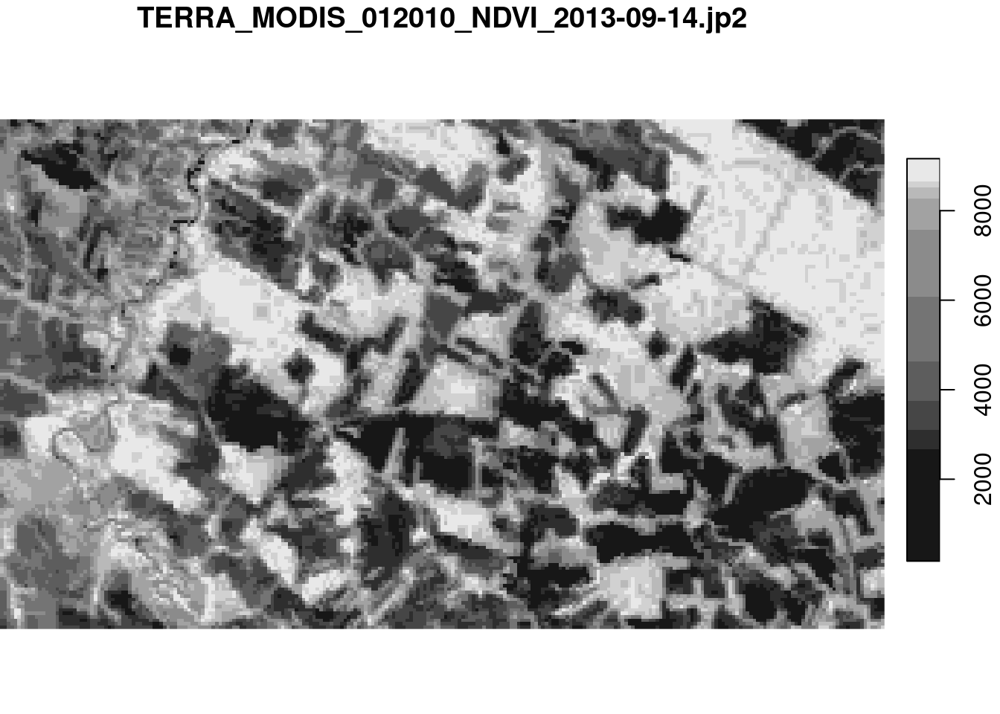
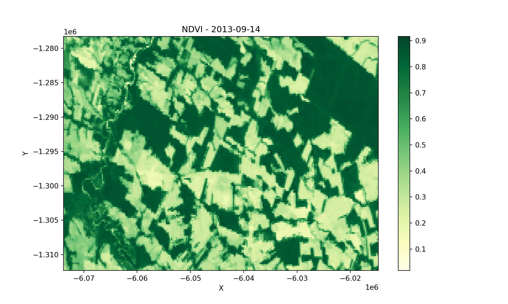
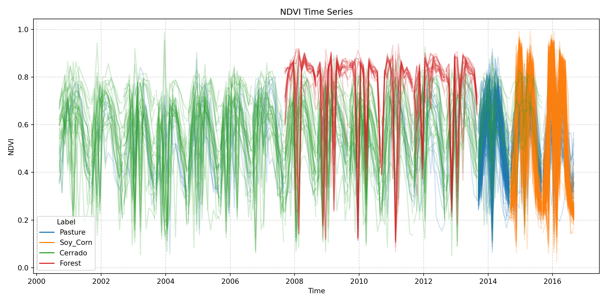

# load package "tibble"
library(tibble)
# load packages "sits" and "sitsdata"
library(sits)
library(sitsdata)
# required packages to demonstrate examples
library(sf)
library(stars)
library(terra)
# set tempdir if it does not exist
tempdir_r <- "~/sitsbook/tempdir/R/annex_export"
dir.create(tempdir_r, showWarnings = FALSE)30 Exporting data to other packages
Configurations to run this chapter
# load "pysits" library
from pysits import *
from pathlib import Path
# set tempdir if it does not exist
tempdir_py = Path.home() / "sitsbook/tempdir/Python/annex_export"
tempdir_py.mkdir(parents=True, exist_ok=True)30.1 R formats
This section demonstrates how to export sits data to commonly used data structures in R, facilitating integration with other R packages.
30.1.1 Exporting time series data to sf
The sf package is the backbone of geospatial vector processing in R [1]. To export time series tibbles from sits to sf, the function sits_as_sf() creates an sf POINT object with the locations of each sample and includes the time_series column as a list. Each row in the sf object contains the time series associated to the sample.
# Export a sits tibble to sf
sf_obj <- sits_as_sf(samples_modis_ndvi)
# Display the sf object
sf_objSimple feature collection with 1218 features and 8 fields
Geometry type: POINT
Dimension: XY
Bounding box: xmin: -60.4875 ymin: -17.4373 xmax: -51.565 ymax: -9.3126
Geodetic CRS: WGS 84
# A tibble: 1,218 × 9
crs geometry longitude latitude start_date end_date
* <chr> <POINT [°]> <dbl> <dbl> <date> <date>
1 EPSG:4326 (-55.1852 -10.8378) -55.2 -10.8 2013-09-14 2014-08-29
2 EPSG:4326 (-57.794 -9.7573) -57.8 -9.76 2006-09-14 2007-08-29
3 EPSG:4326 (-51.9412 -13.4198) -51.9 -13.4 2014-09-14 2015-08-29
4 EPSG:4326 (-55.9643 -10.0621) -56.0 -10.1 2005-09-14 2006-08-29
5 EPSG:4326 (-54.554 -10.3749) -54.6 -10.4 2013-09-14 2014-08-29
6 EPSG:4326 (-52.4572 -10.9512) -52.5 -11.0 2013-09-14 2014-08-29
7 EPSG:4326 (-52.1443 -13.9981) -52.1 -14.0 2013-09-14 2014-08-29
8 EPSG:4326 (-57.6907 -13.3382) -57.7 -13.3 2015-09-14 2016-08-28
9 EPSG:4326 (-54.7034 -16.4265) -54.7 -16.4 2015-09-14 2016-08-28
10 EPSG:4326 (-56.7898 -11.4209) -56.8 -11.4 2011-09-14 2012-08-28
# ℹ 1,208 more rows
# ℹ 3 more variables: label <chr>, cube <chr>, time_series <list>30.1.2 Exporting data cubes to stars
The stars R package handles spatiotemporal arrays. It provides a general framework for working with raster and vector data. Data cubes in sits can be converted to stars objects using sits_as_stars(). By default, the stars object will be loaded in memory. This can result in heavy memory usage. To produce a stars.proxy object, users have to select a single date, since stars does not allow proxy objects to be created with two dimensions.
# create a data cube from a local set of TIFF files
# this is a cube with 23 instances and one band ("NDVI")
data_dir <- system.file("extdata/raster/mod13q1", package = "sits")
cube <- sits_cube(
source = "BDC",
collection = "MOD13Q1-6.1",
data_dir = data_dir
)
stars_object <- sits_as_stars(cube)
# plot the first date of the stars object
plot(stars_object[,,,,1])
30.1.3 Exporting data cubes to terra
The terra package in R is a high-performance framework for spatial raster and vector data analysis. It was developed as the successor to the older raster package, offering a faster, more memory-efficient, and flexible API for working with geographic data. To export data cubes to terra, sits uses sits_as_terra() function which takes information about files, bands and dates in a data cube to produce an object of class SpatRasterDataset in terra. A SpatRasterDataset is an object that holds a collection of sub-datasets, where each sub-dataset is a SpatRaster sharing the same spatial extent and coordinate reference system. In terms of correspondence with sits, each sub-dataset holds all the bands of the data cube for a single time step. Therefore, the SpatRasterDataset will hold as many sub-datasets as there are time steps in the cube.
# create a data cube from a local set of TIFF files
# this is a cube with 23 instances and three bands ("NDVI", "EVI", "CLOUD")
data_dir <- system.file("extdata/sinop", package = "sitsdata")
cube <- sits_cube(
source = "BDC",
collection = "MOD13Q1-6.1",
data_dir = data_dir
)
terra_object <- sits_as_terra(cube)
# show the contents of the SpatRasterDataset object
terra_objectclass : SpatRasterDataset
subdatasets : 23
dimensions : 551, 944 (nrow, ncol)
nlyr : 3, 3, 3, 3, 3, 3, 3, 3, 3, ...
resolution : 231.656, 231.656 (x, y)
extent : -6181982, -5963298, -1353336, -1225694 (xmin, xmax, ymin, ymax)
coord. ref. : +proj=sinu +lon_0=0 +x_0=0 +y_0=0 +R=6371007.181 +units=m +no_defs
source(s) : TERRA_MODIS_012010_CLOUD_2013-09-14.tif, TERRA_MODIS_012010_EVI_2013-09-14.tif, TERRA_MODIS_012010_NDVI_2013-09-14.tif, TERRA_MODIS_012010_CLOUD_2013-09-30.tif, TERRA_MODIS_012010_EVI_2013-09-30.tif, TERRA_MODIS_012010_NDVI_2013-09-30.tif, ...
names : 2013-09-14, 2013-09-30, 2013-10-16, 2013-11-01, 2013-11-17, 2013-12-03, ...30.2 Python formats
This section presents the available options for Python users to export sits data to various formats for further analysis and interoperability
30.2.1 Exporting time series and data cubes to xarray
The xarray library is a core tool for labeled multi-dimensional arrays in Python and it is widely used for handling various types of data, including time-series and Earth Observation Data Cubes. This section presents how to convert sits objects to xarray.
Exporting data cubes
Data cubes in sits can be converted to xarray objects using sits_as_xarray(). By default, the xarray object will be loaded in memory. This can result in heavy memory usage.
from pysits import sits_cube, sits_as_xarray
from pysits import r_package_dir
# Create a data cube from a local set of TIFF files
# this is a cube with 23 instances and one band ("NDVI")
data_dir = r_package_dir("extdata/raster/mod13q1", package = "sits")
# Load cube
cube = sits_cube(
source = "BDC",
collection = "MOD13Q1-6.1",
data_dir = data_dir
)
# Transform to xarray
xcube = sits_as_xarray(cube)
xcube<xarray.DataArray (band: 1, time: 12, y: 147, x: 255)> Size: 2MB
dask.array<astype, shape=(1, 12, 147, 255), dtype=float32, chunksize=(1, 1, 147, 255), chunktype=numpy.ndarray>
Coordinates:
* band (band) <U4 16B 'NDVI'
scale_factor (band) float64 8B 0.0001
offset_value (band) int64 8B 0
missing_value (band) int64 8B -3000
* time (time) datetime64[us] 96B 2013-09-14 ... 2014-08-29
* y (y) float64 1kB -1.278e+06 -1.279e+06 ... -1.312e+06
* x (x) float64 2kB -6.074e+06 -6.073e+06 ... -6.015e+06
spatial_ref int32 4B 0
![]()
As an example, to plot the new xarray variable, you can use:
import matplotlib.pyplot as plt
# Select first time
xcube_slice = xcube.sel(band = "NDVI").sel(time=xcube.time[0])
# Extract timestamp
timestamp = str(xcube_slice.time.values)[:10]
# Plot
plt.figure(figsize=(10, 6))
xcube_slice.plot(cmap='YlGn')
plt.title(f"NDVI - {timestamp}")
plt.xlabel("X")
plt.ylabel("Y")
plt.show()
Exporting time series
Following the same strategy used for data cubes, you can convert sits time series to xarray using the sits_as_xarray() function. The example below demonstrates the process
from pysits import sits_as_xarray
from pysits import samples_modis_ndvi
xts = sits_as_xarray(samples_modis_ndvi)
xts<xarray.Dataset> Size: 2MB
Dimensions: (sample: 1218, time: 192)
Coordinates:
* sample (sample) int64 10kB 0 1 2 3 4 5 ... 1213 1214 1215 1216 1217
longitude (sample) float64 10kB -55.19 -57.79 -51.94 ... -55.94 -55.92
latitude (sample) float64 10kB -10.84 -9.757 -13.42 ... -12.04 -12.04
label (sample) object 10kB 'Pasture' 'Pasture' ... 'Forest' 'Forest'
cube (sample) object 10kB 'MOD13Q1' 'MOD13Q1' ... 'MOD13Q1' 'MOD13Q1'
start_date (sample) datetime64[s] 10kB 2013-09-14 2006-09-14 ... 2009-09-14
end_date (sample) datetime64[s] 10kB 2014-08-29 2007-08-29 ... 2010-08-29
* time (time) datetime64[s] 2kB 2000-09-13 2000-10-15 ... 2016-08-28
Data variables:
NDVI (sample, time) float64 2MB nan nan nan nan ... nan nan nan nan
As an example, to plot the new xarray variable, you can use:
import pandas as pd
import matplotlib.pyplot as plt
# Extract time and NDVI values
time = xts.time.values
labels = xts.label.values
ndvi_values = xts.NDVI.values
# Assign a color to each unique label
unique_labels = pd.unique(labels)
label_colors = {label: color for label, color in zip(unique_labels, plt.cm.tab10.colors)}
# Plot all time series
plt.figure(figsize=(12, 6))
for i in range(ndvi_values.shape[0]):
plt.plot(time, ndvi_values[i], alpha=0.2, color=label_colors[ labels[i] ])
# Add legend
for label in unique_labels:
plt.plot([], [], color=label_colors[label], label=label)
# Add labels
plt.xlabel("Time")
plt.ylabel("NDVI")
plt.title("NDVI Time Series")
plt.legend(title="Label")
plt.grid(True, linestyle='--', alpha=0.5)
plt.tight_layout()
plt.show()
30.3 Generic formats
This section describes formats that are not tied to a programming language. Data exported in these formats can be read by sits in both R and Python, and also by other software such as GIS packages, databases and data analysis libraries.
30.3.1 Exporting time series to Parquet
Apache Parquet is an open, column-oriented file format designed for efficient storage and retrieval of tabular data. Parquet files are compressed and can be read selectively by column, which makes them compact and fast to read. They are supported by many tools, including arrow in R, pandas, polars and geopandas in Python, DuckDB, GDAL and QGIS. For these reasons, Parquet is the recommended format in sits for saving and sharing time series. All training samples used in this book are stored as Parquet files in Hugging Face, as described in the chapter “Sharing and retrieving data with Hugging Face”.
Function sits_to_parquet() writes a sits tibble to a Parquet file. It has two parameters: data, the time series (tibble of class sits), and file, the full path of the file to be written, which must have the extension .parquet. The file uses a long layout: instead of storing each time series as a nested table, as sits does in memory, it has one row per sample and date. Each row holds the sample attributes (longitude, latitude, start_date, end_date, label and cube), a sample:id column that identifies the sample, an Index column with the date, and one column per band. A geometry column with the location of each sample is also added. Columns that do not follow the number of dates, such as predicted (classification results) and base_data, are kept nested.
The file footer contains two metadata blocks. The sits block stores the S3 class of the tibble, the order of the columns, the order of the bands and the names of the nested columns, so that the original tibble can be rebuilt exactly. The geo block follows the GeoParquet 1.1 specification, so that GDAL and QGIS read the file as a point layer. Both sits_to_parquet() and sits_from_parquet() require the arrow and jsonlite packages.
In the example below, we export the samples_modis_ndvi data set, which has 1,218 time series with the NDVI band, to a Parquet file. We then use arrow::read_parquet() to read the file as a plain table, to show the long layout.
# export the samples to a Parquet file
parquet_file <- file.path(tempdir_r, "samples_modis_ndvi.parquet")
sits_to_parquet(
data = samples_modis_ndvi,
file = parquet_file
)
# read the file as a plain table to show its layout
arrow::read_parquet(parquet_file) |>
head()# A tibble: 6 × 10
longitude latitude start_date end_date label cube `sample:id` Index
<dbl> <dbl> <date> <date> <chr> <chr> <int> <date>
1 -55.2 -10.8 2013-09-14 2014-08-29 Pasture MOD13… 1 2013-09-14
2 -55.2 -10.8 2013-09-14 2014-08-29 Pasture MOD13… 1 2013-10-16
3 -55.2 -10.8 2013-09-14 2014-08-29 Pasture MOD13… 1 2013-11-17
4 -55.2 -10.8 2013-09-14 2014-08-29 Pasture MOD13… 1 2013-12-19
5 -55.2 -10.8 2013-09-14 2014-08-29 Pasture MOD13… 1 2014-01-17
6 -55.2 -10.8 2013-09-14 2014-08-29 Pasture MOD13… 1 2014-02-18
# ℹ 2 more variables: NDVI <dbl>, geometry <arrw_bnr>import pandas as pd
from pysits import sits_to_parquet, samples_modis_ndvi
# export the samples to a Parquet file
parquet_file = str(tempdir_py / "samples_modis_ndvi.parquet")
sits_to_parquet(
data = samples_modis_ndvi,
file = parquet_file
)
# read the file as a plain table to show its layout
pd.read_parquet(parquet_file).head()Each sample now occupies as many rows as it has dates; the 1,218 samples of samples_modis_ndvi, with 12 dates each, become 14,616 rows. This layout is convenient for other tools. For example, analysts can filter the samples by label or date with SQL queries in DuckDB, or open the file in QGIS to view the locations of the samples.
To import the data back into sits, use sits_from_parquet(). It reads a file written by sits_to_parquet() and uses the sits metadata block to rebuild the tibble, with its S3 class, column order and nested time series. The result is the same as the original data set, and it can be used in any sits function.
# read the samples back into sits
samples_parquet <- sits_from_parquet(parquet_file)
# the result is a sits tibble with nested time series
samples_parquet# A tibble: 1,218 × 7
longitude latitude start_date end_date label cube time_series
<dbl> <dbl> <date> <date> <chr> <chr> <named list>
1 -55.2 -10.8 2013-09-14 2014-08-29 Pasture MOD13Q1 <tibble [12 × 2]>
2 -57.8 -9.76 2006-09-14 2007-08-29 Pasture MOD13Q1 <tibble [12 × 2]>
3 -51.9 -13.4 2014-09-14 2015-08-29 Pasture MOD13Q1 <tibble [12 × 2]>
4 -56.0 -10.1 2005-09-14 2006-08-29 Pasture MOD13Q1 <tibble [12 × 2]>
5 -54.6 -10.4 2013-09-14 2014-08-29 Pasture MOD13Q1 <tibble [12 × 2]>
6 -52.5 -11.0 2013-09-14 2014-08-29 Pasture MOD13Q1 <tibble [12 × 2]>
7 -52.1 -14.0 2013-09-14 2014-08-29 Pasture MOD13Q1 <tibble [12 × 2]>
8 -57.7 -13.3 2015-09-14 2016-08-28 Pasture MOD13Q1 <tibble [12 × 2]>
9 -54.7 -16.4 2015-09-14 2016-08-28 Pasture MOD13Q1 <tibble [12 × 2]>
10 -56.8 -11.4 2011-09-14 2012-08-28 Pasture MOD13Q1 <tibble [12 × 2]>
# ℹ 1,208 more rowsfrom pysits import sits_from_parquet
# read the samples back into sits
samples_parquet = sits_from_parquet(parquet_file)
# the result is a sits tibble with nested time series
samples_parquetFunction sits_from_parquet() also reads Parquet files written by other programs, which have no sits metadata block. In this case, the file must have the columns longitude, latitude, start_date, end_date and label; files without them are refused. The class of the result is inferred from the columns: a column named Index is read as the time index, bands whose names start with EMB are read as embeddings (class embeddings), and a column named cluster indicates a set of clustered samples (class sits_cluster). Files written by a different version of the layout are read, with a warning.
The file parameter can also be an HTTP or HTTPS URL. In this case, sits_from_parquet() first reads the file footer to check that it holds a sits sample set, and refuses the file before transferring any data if it does not. It then reports the size of the file and downloads it to a temporary location. The server must accept byte-range requests, as Hugging Face does. In the example below, we read the deforestation samples for Rondonia directly from their Hugging Face URL. The result is a sits tibble with 6,007 time series. The parameter timeout sets the number of seconds each request may take. For files stored in Hugging Face, sits_from_hf() is a simpler alternative, since it only requires the name of the repository and of the file.
# read samples directly from a URL
samples_rondonia <- sits_from_parquet(
file = "https://huggingface.co/datasets/e-sensing/samples_book/resolve/main/samples_deforestation_rondonia.parquet"
)# read samples directly from a URL
samples_rondonia = sits_from_parquet(
file = "https://huggingface.co/datasets/e-sensing/samples_book/resolve/main/samples_deforestation_rondonia.parquet"
)References
[1]
E. Pebesma, “Simple Features for R: Standardized Support for Spatial Vector Data,” The R Journal, vol. 10, no. 1, p. 439, 2018, doi: 10.32614/RJ-2018-009.